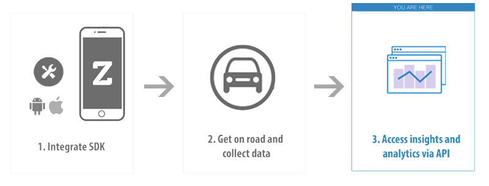

Introduction¶
The Zendrive Driver Analytics API provides driver analytics metrics at various aggregation levels via URI paths. To use this API, your application should make a HTTPS request and parse the response. The response format is JSON. Use standard HTTP GET methods to retrieve driver analytics. We support cross-origin resource sharing to allow you to interact securely with our API from a client-side web application. Remember that you should never expose your secret API key in any public website’s client-side code. JSON will be returned in all responses from the API, including errors.
Since the API is based on open standards, you can use any web development language to access the API.
Authentication¶
You authenticate to the Zendrive API endpoint by providing your application key in the request parameters. The application key must be specified as the apikey query parameter. It is a required parameter in every API request. Sign Up<http://zendrive.com> to get your API key. Your API key carries many privileges, so keep it secret and secure!
All API requests must be made over HTTPS. Calls made over plain HTTP will fail.
API Host and Versioning¶
All API requests must be sent to https://api.zendrive.com. All API requests must contain the appropriate version in the path. Current API version is v2.
Errors¶
Zendrive API uses conventional HTTP response codes to indicate success or failure of an API request. Response codes in the 2xx range indicate success, codes in the 4xx range indicate an error that resulted from the provided information (e.g. a required parameter was missing etc.) and codes in the 5xx range indicate an error with Zendrive’s servers. The error response JSON may have following attributes.
| error | A human readable message giving more details about the error. |